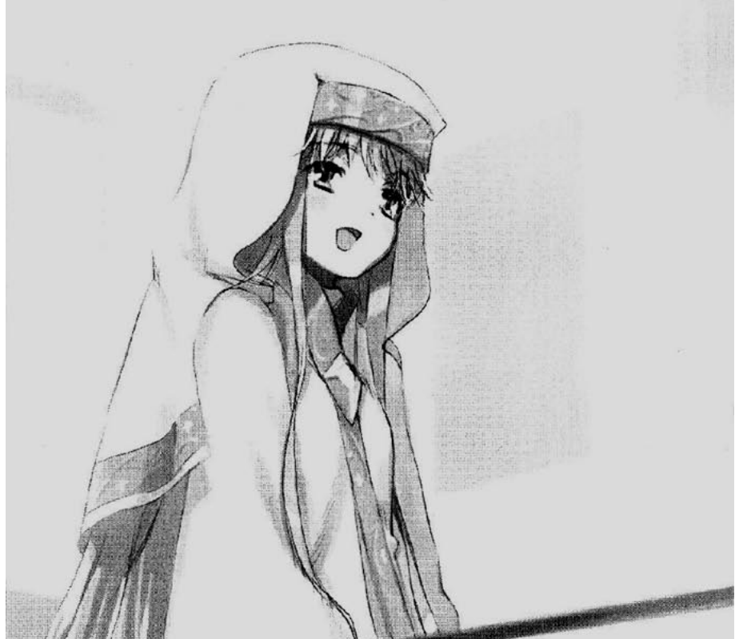
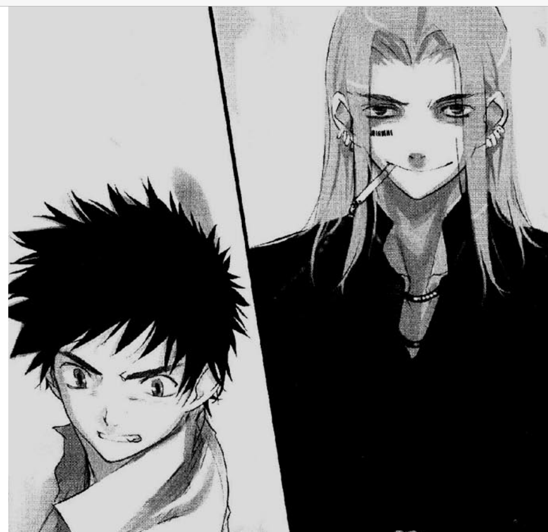
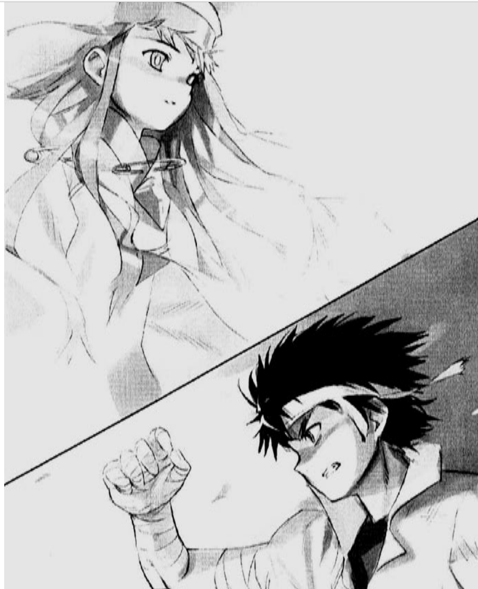
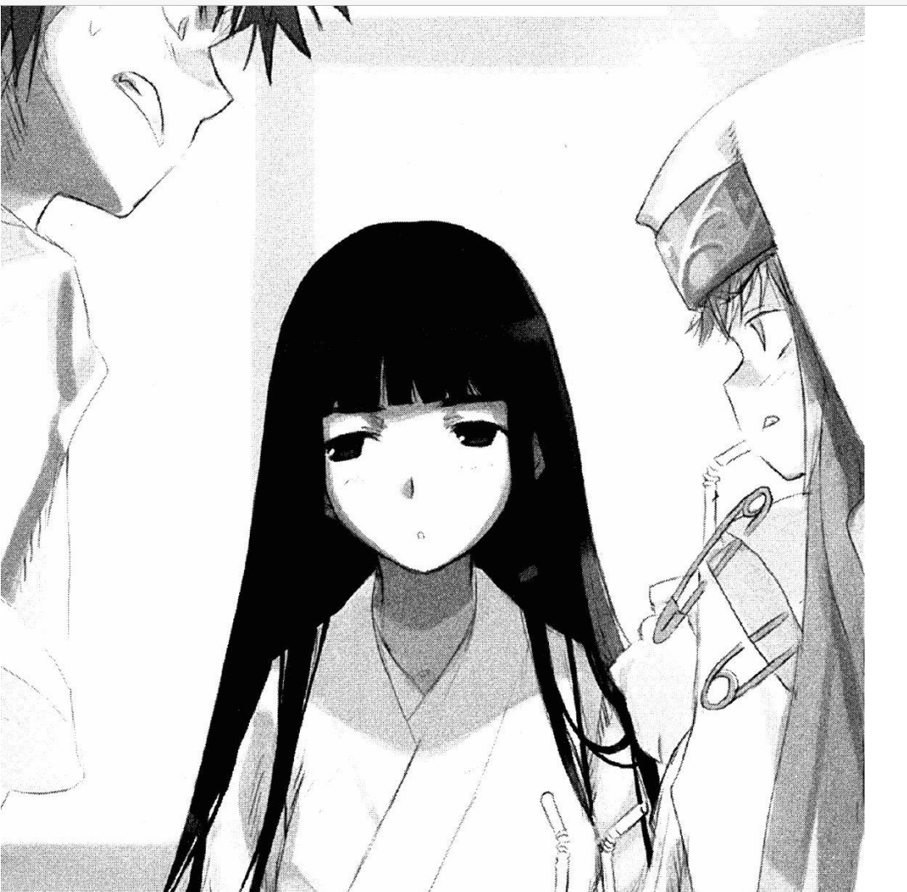
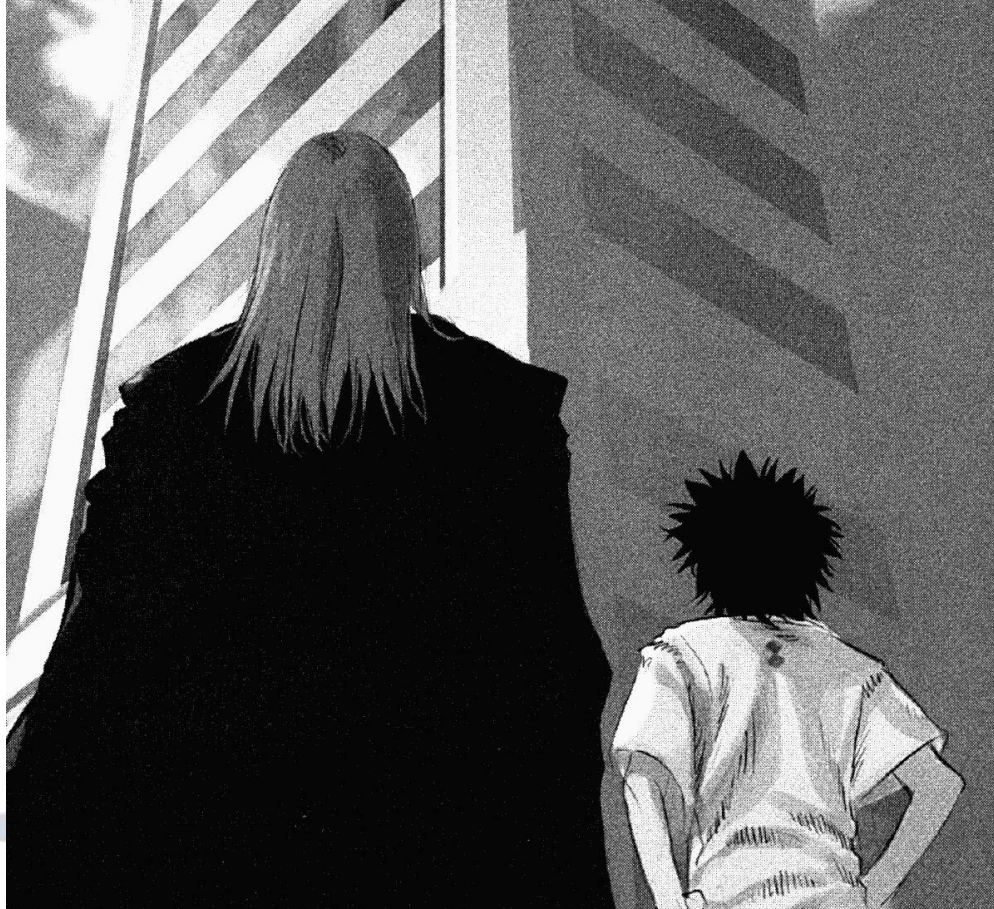
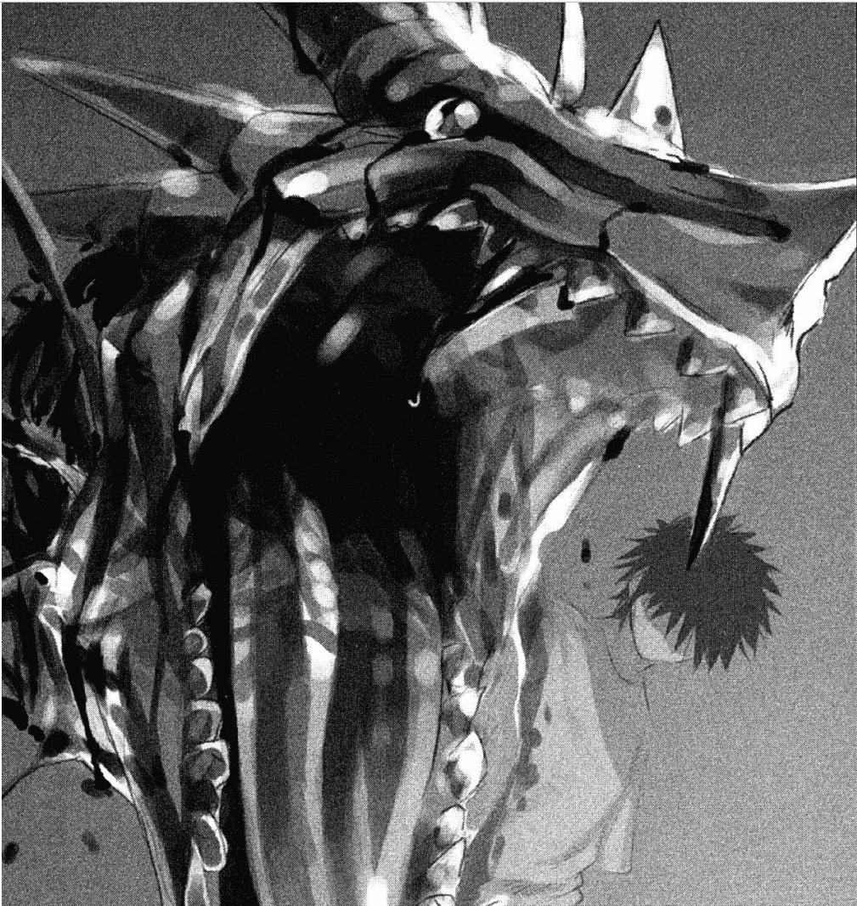
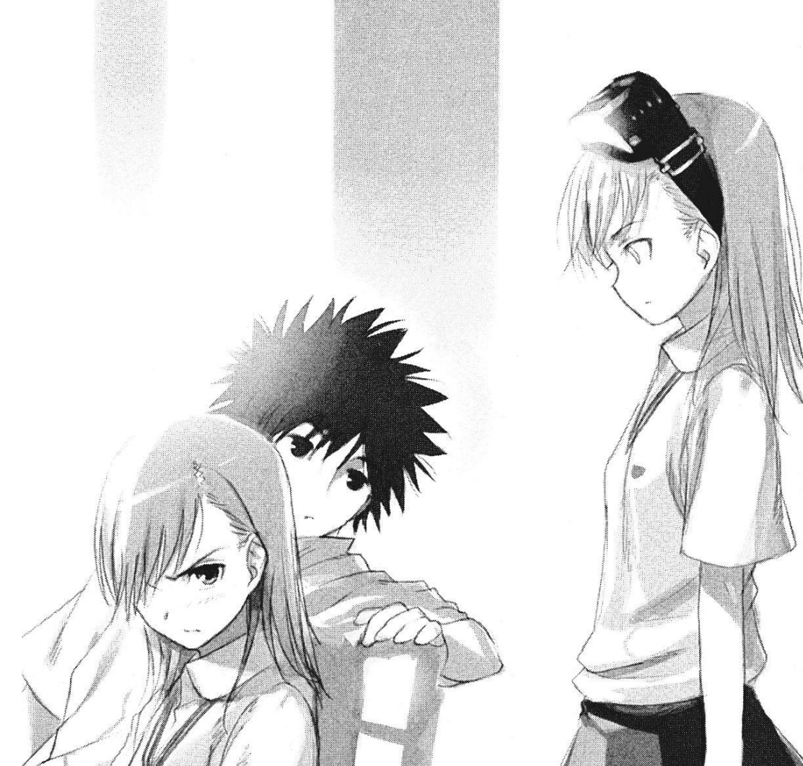
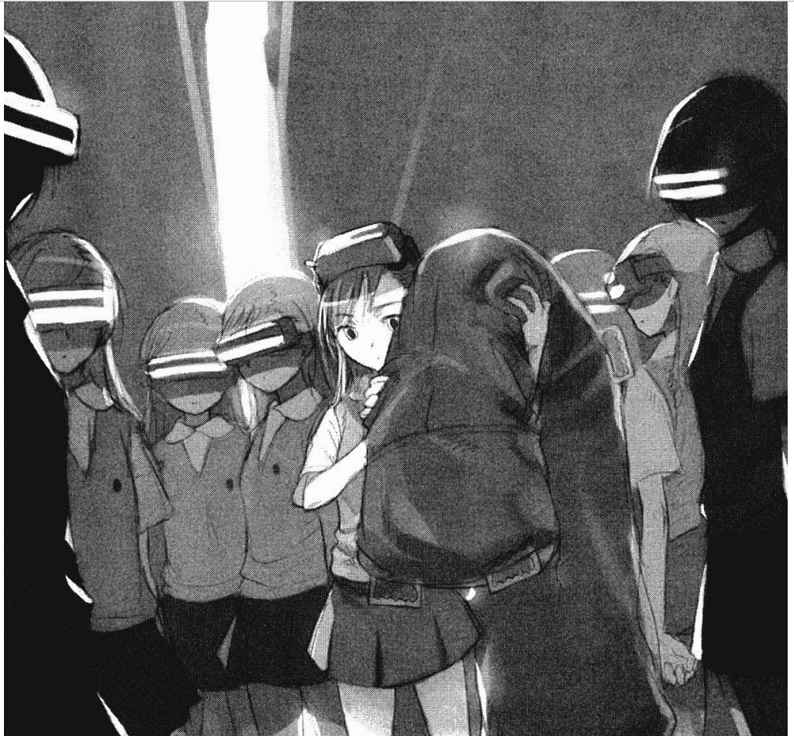
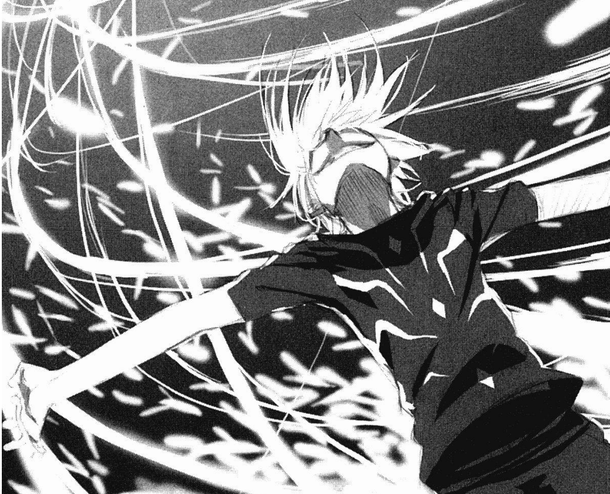

Volumen 1: El cuento del chico asesino de ilusiones: Imagine Breaker
Al inicio de esta historia nos presentan a un chico de preparatoria con muy mala suerte; en realidad casi todo sale mal
o siempre termina fuera de lo planeado, eso hizo que Kamijou sea desde siempre alguien muy adaptable a situaciones imprevistas.
No se trata de un chico listo, en realidad siempre debe asistir a clases extra para acreditar sus materias, tampoco destaca en
otro aspecto, el cual vale mucho en el lugar donde se encuentra como estudiante; estos son los poderes sobrenaturales, donde dentro de la
escala de 0 a 5, donde 5 son los más poderosos, él es un 0. A pesar de no tener poderes, él tiene en su mano derecha una
habilidad que le permite negar cualquier poder con solo tocarlo, este poder no puede ser explicado por la ciencia de esta
ciudad que esta 80 años adelantada al resto del mundo, lo cual hace que el no crea mucho en el sistema de medidas de los
poderes.

Index hablando sobre la magia
No es sino cuando conoce a una chica con atuendo me monja, que cayó desde la azotea al balcón de su dormitorio
que Kamijou supo de la existencia de la magia, algo totalmente contrario a los poderes de CiudadAcademia que son
de base científica. Para Kamijou que ni siquiera respetaba el sistema de niveles en el que vivía, lograr creer en
la magia era casi imposible, la monja llamada Index hizo lo que estuvo a su alcance para demostrar que la eso
era real (ella no puede usarla). El primer contacto que Kamijou tuvo con lo oculto, fue unas horas después de
su charla con Index, donde con ella herida tuvo que luchar contra un mago de fuego llamado Styl Magnus, durante
ese encuentro se comprobaron dos cosas, que la magia existe de alguna forma y que la mano derecha es muy capaz de
negar esta, sobre la manera de actuar del chico, se debe rescatar que no dudo en arriesgar su vida por la chica
que recién conoció ese día.

Kamijou Touma la a punto de pelear contra el mago
Para el final de este volumen, Kamijou se mantuvo firme en proteger a Index de la iglesia (La organización mágica) que
la perseguía, peleando en su camino con una santa llamada Kanzaki Kaori, fue con ella que descubrió que ellos solo querían
salvarla de morir, pero el método de ellos para salvarla era uno donde sus recuerdos eran eliminados, pero no pudo
aceptar ese hecho, para este punto la herida Index estaba siendo atendida por Komoe sensei, pero ella igual moriría, fue gracias
a los conocimientos de la ciencia de Kamijou y sobre todo de una profesora que revelaron que todo eso de borrar los recuerdos
era un plan de la iglesia para que los recuerdos de la chica nunca fueran descubiertos, ya que poseía memoria fotográfica.
Fue que Kamijou luego de salvarla con su mano derecha, la comenzar a dejar vivir en su dormitorio, esto para seguir protegiéndola.
Para finalizar, si bien Kamijou solo quería proteger a Index, se pudo ver como puso sus egoístas sentimientos de por medio
a lo dejar que borraran la mente de ella, sin estar seguro de que pasaría, si bien ella no quería que eso pasara, no
tenia idea de que moriría, en este punto podemos ver un protagonista inmaduro y que solo se deja llevar por lo que ve, sin
pensar en las consecuencias, pero que no teme a enfrentar a oponentes desconocidos, por proteger a quien llora.

Touma tratando de salvar a Index que entro en modo defensa
Volumen 2: Una torre de cristal-La torre de babel
Durante el segundo volumen, kamijou tiene esta en el proceso de acostumbrarse a vivir con Index, en un dormitorio
para una persona, así como el hecho de ser perseguido por una de los 7 niveles 5 de CiudadAcademia, es cuando el mago
conocido Styl el propone ir a cierto edificio a buscar a un mago, que según el, quiere salvar a Index de morir, sin
saber que ella ya había sido salvada, Kamijou al inicio se negó a entrar de nuevo en contacto con la magia, pero al
saber que una chica que recién conoció ese día en un restaurante iba a ser usada para un ritual, por el momento no
sabía que se trataba de un esfuerzo para salvar a la monja, aun así salto de nuevo a la pelea por la chica
llamada Hinegami.

Hinegami mira como pelean Touma e Index
Un chico normal de preparatoria vio como unas grandes organizaciones que hasta hace poco para el eran imposibles
que existieran, estaban luchando en el lugar donde vive, además de ver un tipo de magia que hace que la gente
se separe de lugares, para que ni siquiera la noten, por primera vez se dio cuenta que lo que el entendía
del mundo no era nada. Al llegar con Aurelus, el mago que decidido usar a Hinegami por su maldición de atraer
vampiros, para atrapar a uno de ellos y hacer que Index fuera convertida en uno de ellos y salvarla de morir
ya que los vampiros son inmortales, Touma se enteró que hace tiempo Aurelus fue el protector de Index y que
el fallo en cuidarla, por lo que no pudo dejar de compararse con él, pensando en que haría si de alguna forma
también fallaba, lo cual lo lleno de miedo, pero al final se convenció de que había logrado salvarla una vez
y con la inocencia de un infante juro no fallar.

Touma y Styl llegan al edificio donde esta Aurelus
Al final y después de derrotar a Aurelus, y salvar una vez más a index, el solo estaba más firme en su decisión de cuidarla
pero ahora sí que temía a los magos y sus poderes, que pensaba que no existían y ahora estaban por todos lados en la Ciudad
, además de que ahora también estaba la niña que tenía el poder de atraer vampiros, aunque al parecer Kamijou al
tocarla desapareció este poder salvándola de este modo. El chico normal de preparatoria no sabía que haría si otra vez
tenía que salvar a alguien del peligro, ni siquiera conoce el poder que tiene y esto lo mantiene muy desconcertado, pero según
no necesita una razón para salvar a alguien, es sorprendente la valentía con la que lucha a lo desconocido, sigue siendo terco
pero siempre tiene las mejores intenciones.

EL brazo dercho de Touma se comporta de forma extraña
Volumen 3: Radio Noise. Nivel 2
Por ahora solo habíamos visto a Kamijou flaquear ante algo desconocido como lo es la magia, y que por su puesto
este se viera en la situación de pelear por lo que cree correcto ayudado de su poder. Para ese volumen, Touma se
ve envuelto en una pelea entre dos niveles 5; la numero tres Misaka Mikoto y el numero uno Accelarator, donde por alguna razón
se estaban creando clones de Misaka, para que pelearan con Accelarator, al final y como su nombre lo dice, el más fuerte
de CiudadAcademia estaba masacrando a las chicas que daban la ilusión de ser muñecas, que se parecen a Misaka, pero Por
dentro tenía las emociones de un humado, el protaginista se encontró con que la ciencia que rige las cosas que cree, o en parte,
tiene un lado muy oscuro.

Touma conoce a la hermana de Misaka
Al enterarse de las horribles cosas que estaban haciendo los científicos, Misaka tuvo que hacer frente a los hechos
y tratar de detenerlos, sin mucho éxito, hasta que decidió pelear con Accelarator, donde ella no le pudo hacer ni
un rasguño, con sus poderes equiparables a un crucero de guerra, a todo esto, Kamijou que conoció a una de las clones
termino enterándose de todo y enfrentando a Misaka, a decir verdad, durante el volumen 1 ya habían tenido encuentros
donde Kamijou había ganado siempre gracias a su mano derecha, pero esta vez era diferente, Misaka ya no podía más
y estaba dispuesta a morir peleando con Accelerator con el fin de detener los experimentos diarios donde siempre
moría un clon de ella misma, aunque más que un clon era una persona.

Se revela ante Kamijou un gran número de clones
Al final, Kamijou logra hacer que Misaka cambie de opinión al recibir los ataques de ella con el cuerpo y no con su mano derecha
por lo que resulto un poco herido y cayo desmayado, en cuando despertó prometió que detendría a Accelerator. En la pelea
Accelerator demostró estar a un nivel diferente de todos, no fue sino gracias a que este se confió, que Kamijou logro esquivar
los materiales de construcción lanzados hacia él y recuperar ventaja, al final y gracias a Misaka y sus clones, logra
llevar la pelea a cuerpo y ganar, ya que el numero uno no sabía pelear, debido a que hasta ahora nadie lo había podido tocar,
la verdad es que ni siquiera una bomba nuclear lo lastimaría, pero parece que el brazo derecho de fue también es útil
para que siendo el más débil, logre vencer al más fuerte. Al final de todo, nos quedamos con un Kamijou que ahora piensa más
en los demás, eso lo ayudo a dejar de lado el egoísmo con el que salvo a Index, pero sin perder ese deseo de ayudar a quien llora
y pide ayuda, nos quedamos con un chico que valora mucho a la familia y a sus amigos, debe seguir peleando por las más de 10,000
sonrisas que salvo. Después de atestiguar la muerte de una de las sisters, y ver como estas lo veían como normal, ya que para
eso fueron traídas al mundo, Kamijou les ayuda a sentirse más como seres vivos y no como las muñecas que la oscuridad creo.

Accelerator concentra plasta del aire para su ataque final